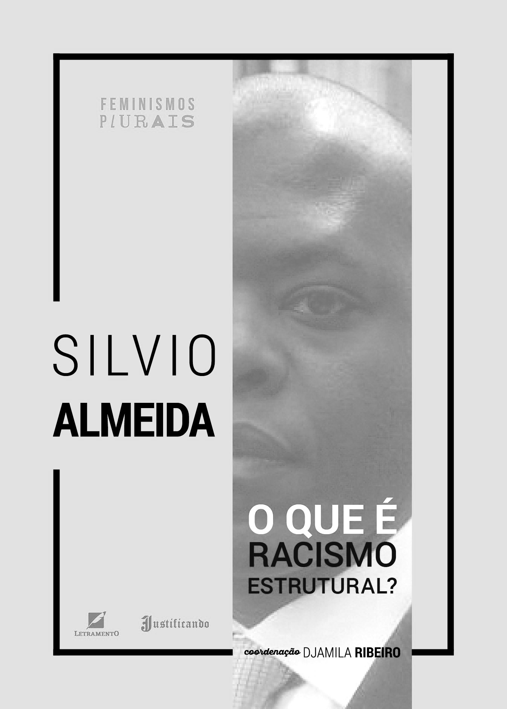
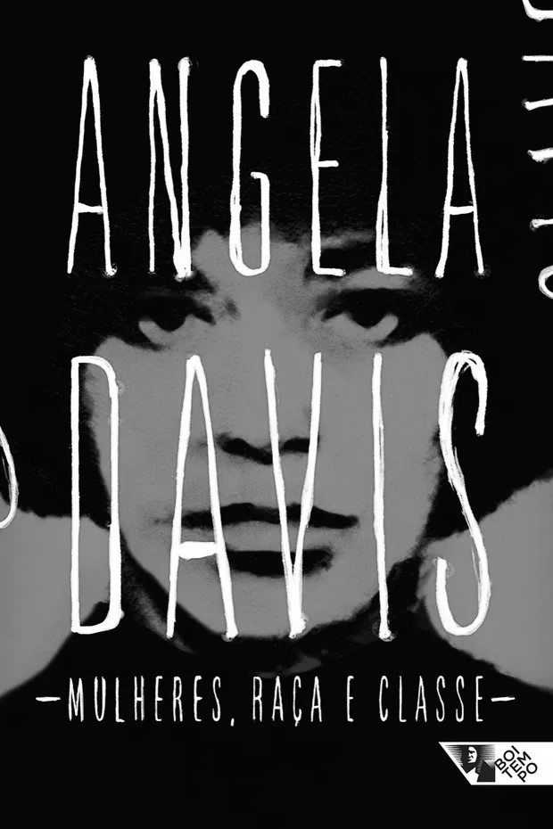

Definição
As Ciências Sociais estudam a sociedade e as relações humanas. Ela se dissolve em três campus de estudo, a Sociologia, Antropologia e Política . A Antropologia Estuda principalmente o desenvolvimento das culturas e relações de genêro. a Política analisa o poder e as instituições governamentais, e a Sociologia examina o comportamento coletivo e as estruturas sociais. Juntas, essas áreas ajudam a entender como a sociedade funciona e se transforma e principalmente contribuindo para a formação crítica do aluno. Em seguida, deixaremos recomendações de livros para o melhor entendimento do tema

Racismo Estrutural de Silvio Almeira explica como o racismo esta diretamente ligada com o modo de produção capitalista e está enraizado nas instituições e nas estrutura sociais na quais fazemos partes desde o nosso processo de socialização, indo além de ações individuais.

GGênero, Raça e Classe – Angela Davis analisa como essas três opressões estão interligadas. Ela discute a exploração das mulheres negras, o papel do capitalismo na desigualdade e defende um feminismo que inclua as questões de raça e classe.
Pequeno Manual Antirracista de Djamila Ribeiro traz reflexões e práticas para combater o racismo no dia a dia. A autora apresenta conceitos como privilégio branco, racismo estrutural e empoderamento negro, propondo ações individuais e coletivas para construir uma sociedade mais justa.
O Estado e a Revolução – Lenin argumenta que o Estado serve aos interesses da burguesia e precisa ser destruído para dar lugar a um governo proletário baseado nos sovietes. Ele critica a democracia burguesa e defende a revolução como caminho para o socialismo.

O Capital – Karl Marx analisa o funcionamento do capitalismo e a exploração da classe trabalhadora. Ele explica a teoria da mais-valia, a acumulação de capital e a luta de classes como motores da transformação social.
Importancias
A influência dessas obras se reflete em direitos que hoje consideramos fundamentais, como liberdade de expressão, direito à educação, igualdade de gênero e proteção contra discriminações. Além disso, elas nos lembram da importância da crítica, do pensamento reflexivo e da necessidade constante de lutar pela manutenção e ampliação desses direitos.
Login
Gostou da nossa disciplina? Faça seu cadastro e mantenha-se atualizado sobre todas as novidades e conteúdos que lançamos. Sua opinião é muito importante para nós! Deixe seus comentários e sugestões — queremos saber como podemos melhorar e tornar sua experiência ainda mais rica e proveitosa.